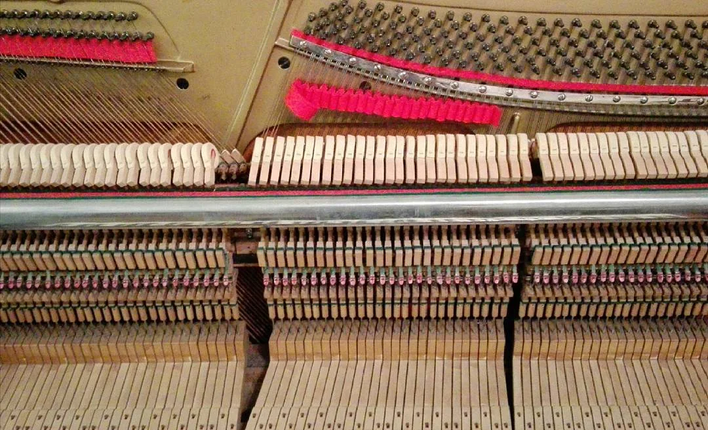
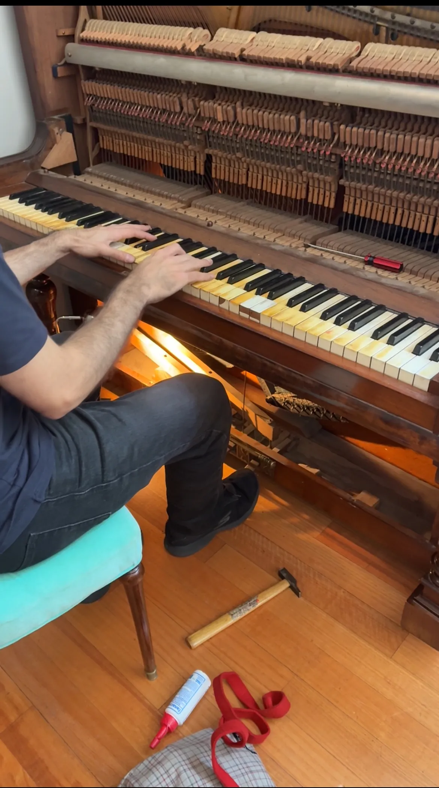
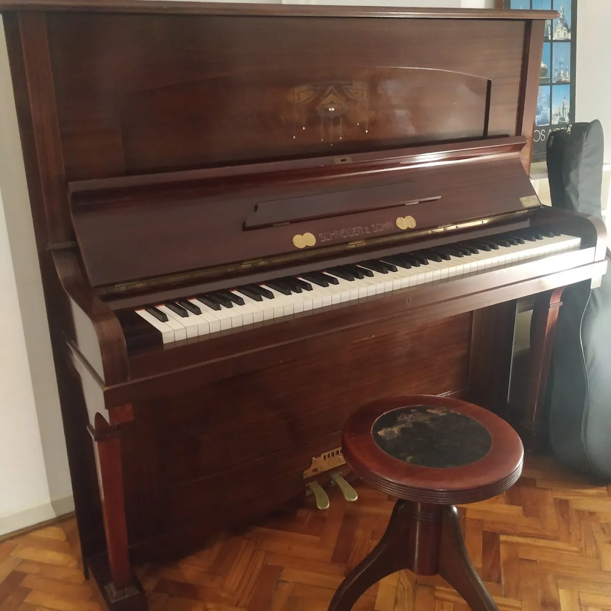
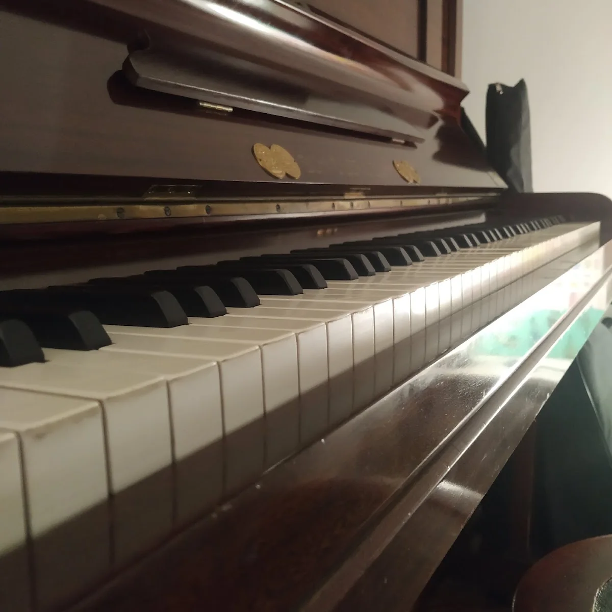
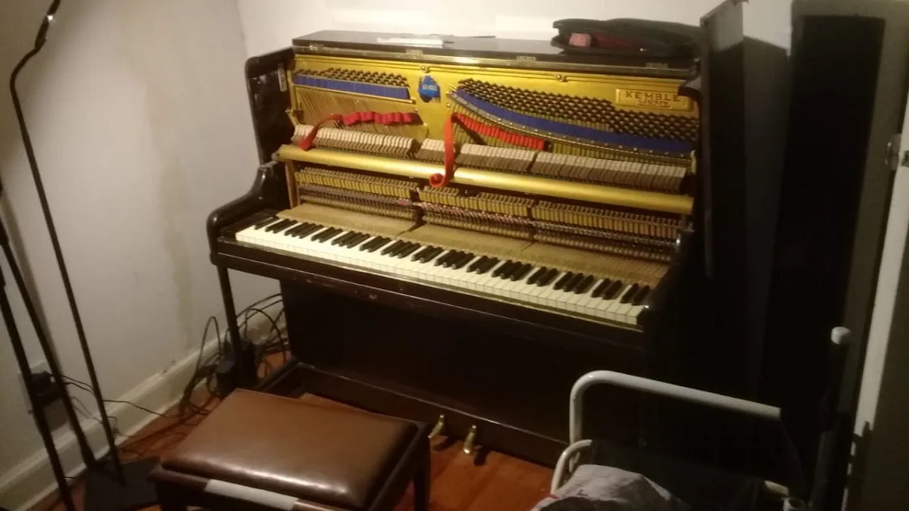

«Martin a dado en la tecla, valga la analogía, acerca del enfoque que yo quería darle a las clases de piano particulares. No solo ofrece la posibilidad a distancia sino que, como en mi caso, pudimos traspasar las fronteras de estos tiempos pandémicos, siempre con los cuidados del caso. Pero yendo a lo que iba, este tipo me salvo la vida, porque encontré en él y su adecuado set de instrumentos y ambiente de trabajo, la paciencia y metodología necesarias para mi progreso con la música y el piano. Cabe destacar que digo que me salvo la vida, porque no solo es mi teacher, tambien logro reacondicionar mi piano vertical de mas de cien años y rescatarlo de las disonancias, haciendo además un trabajo de embelllecimiento estético. Resumen: clases particulares y afinación de piano. Un combo deluxe.»
Afinación y reparación a domicilio · Retiro
Afinadorde Pianos
Martín

Afinación, reparación y acondicionamiento
Martín afina y repara pianos a domicilio, desde Retiro. También hace trabajos de acondicionamiento, y da clases de piano.
- Afinación Afina el piano en el domicilio.
- Reparación También repara. Lo mencionan en las reseñas, junto con la afinación.
- Acondicionamiento Hace trabajos de acondicionamiento. En las reseñas dicen que deja el piano como nuevo, incluso en instrumentos de más de cien años.
- Clases de piano También da clases de piano. Lo cuenta quien ya tomó clases con él, en las reseñas de Google.

Lo que dicen en Google
5,0 ★ 59 reseñas en Google
Ver todas las reseñas
«Martin es el afinador de mi estudio de grabación. Trabaja en mis pianos hace mas de 5 años. Trabaja con un nivel de compromiso y profesionalismo altísimos y deja el piano increíble, como nuevo. También hace reparaciones. 100% recomendado»
«Martin un 10, vino a ver un piano que me regalaron, muy predispuesto en todo momento, hizo un trabajo de acondicionamiento y lo dejó nuevo, muy recomendable.»
Pianos en los que trabajó
Fotos de la ficha de Google: pianos abiertos durante el trabajo y pianos ya listos.



Llamanos o escribinos por Instagram
El teléfono de la ficha de Google es el 011 3598-9824. También está en Instagram como @martinmorita.
- DirecciónEsmeralda 1058, C1007, Retiro, CABA
- BarrioRetiro
- Teléfono011 3598-9824
- Instagram@martinmorita
Mapa de Esmeralda 1058, Retiro, CABA.
Abrir en Google Maps